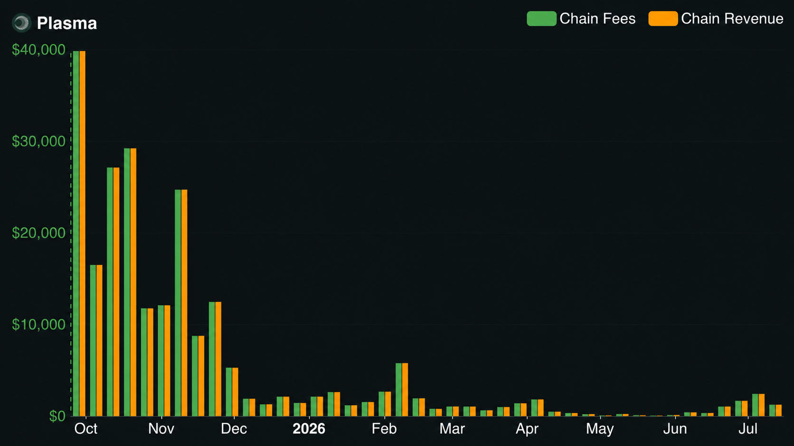
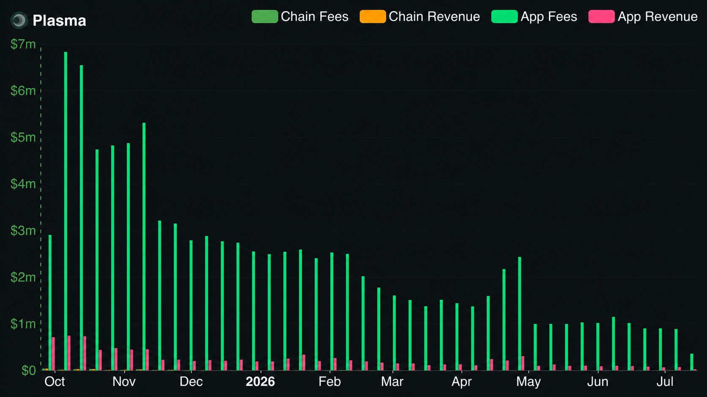

The Coupling Nobody Questions
You just got paid 100 USDT. You want to forward half to someone. You can't.
The transfer reverts, because your wallet holds zero ETH, and Ethereum wants gas in ETH. So before you can move a dollar denominated asset, you have to go acquire a second, volatile asset from an exchange, withdraw it, wait, and only then send. You're holding the value. You just can't move it.
Everyone reading this has hit some version of that, or watched a user hit it. It's the cold start problem, and on a chain built for payments it's fatal: the account holding dollars is gated by a token it never asked for. Tron softened this by making gas cheap, but "cheap" still means you hold TRX. The coupling never actually breaks. Sender equals fee payer, fee payer holds native gas. That rule is baked into every general purpose EVM chain.
Plasma's pitch is that it broke the rule. Send USDT, pay nothing, never touch the native token. The engineering behind that is real, and worth understanding properly. So is the part nobody puts on the landing page: the way it's funded. Both matter, and this piece is about both.
How Plasma Actually Breaks It
Plasma's fix is a paymaster. That word gets thrown around loosely, so be precise about what's different here.
A paymaster is just a mechanism that lets someone other than the sender cover the gas. This isn't new. ERC4337 formalized it on Ethereum years ago. But on Ethereum and its L2s, sponsorship is an app level choice. A specific dApp deploys its own paymaster, funds it from its own budget, and decides to eat gas for its users. It's opt-in, fragmented, and it only works inside the apps that paid to build it. Step outside that app, and you're back to holding ETH.
Plasma moves the paymaster down a layer. It's not a feature an app bolts on. It's native to the protocol, and it applies to one specific asset: USDT. Every wallet, every app, every user gets the zero fee path by default, with no integration and no smart account plumbing. A plain EOA sending a plain transfer just works. That shift, from optional app feature to chain wide default, is the actual innovation. Not the paymaster itself. Its location.
Here's the part the landing page skips. "Zero fee" doesn't mean the transaction is free. It means someone else is paying, and that someone is the Plasma Foundation. Every USDT transfer still burns real gas, still settles in XPL, still pays validators in XPL. The user pays nothing because a protocol owned paymaster, pre-funded with XPL from the Foundation, covers the cost at the moment of the transfer.
And it's narrow. Only simple USDT transfers ride free. Everything else, swaps, contract calls, deploys, any non USDT token, pays gas like any other chain. For those, Plasma offers a softer perk: you can pay the fee in USDT or pBTC instead of XPL, priced by an oracle and converted under the hood, so you still never need the native token. But make no mistake, that's a paid transaction.
So the honest answer to "does Plasma have gas fees" is: yes, for everything except the one action it chose to subsidize. It's a two tier system. Free for the remittance. Paid for the DeFi.
The Rope
Everything above is the clean version. The mechanism is real and it works today. The question is what it depends on, and that question comes straight from Plasma's own documentation.
The docs are explicit: the paymaster is "directly supported by the foundation." Gas is covered at the moment of the transfer, from a pre-funded XPL balance, drawn from the "Ecosystem & Growth" allocation. The same docs describe self funding as something that could come later, not something running now: "future upgrades could enable gas based validator revenue to fund the system." Read that carefully. The entity paying for zero fee USDT is the Foundation, the source is a pre-funded balance, and the mechanism that would let the network pay for itself is future tense.
That's not a flaw. Subsidizing early usage is a reasonable bootstrap. But it makes one thing a dependency: at some point, fee revenue from paid activity is meant to shoulder what the Foundation currently carries. So the fair question is whether that revenue is trending toward the handoff, or away from it.

Here's what the chain actually earns. Fees peaked near $40k in launch week, dropped under $10k by December, and since February have sat near the floor. Chain fees and chain revenue move as a single line, so the protocol keeps almost everything it charges. It's just charging very little. This is the revenue base that's eventually meant to replace the subsidy. Today it is small and flat, not rising.
There's a second way to read that low number, and it's the strongest counterargument, so let's state it fairly: low chain fees are partly by design. The product is free transfers. ofc the chain collects little. That's true. But it cuts both ways, because it means the network's income is structurally tied to the paid tier (DeFi, contracts, swaps), and that tier has to grow into a very large number to cover a very large volume of free transfers.
So the question sharpens: is paid activity on Plasma scaling like something that will one day carry the free tier?

This chart isn't an accusation, it's a scale check. Applications on Plasma process meaningful fee volume. The chain's own fee line, the green and orange at the bottom, is barely visible beside it. I'm not claiming apps owe the chain that money, they don't, app fees and protocol revenue are different things. The point is narrower and harder to wave away: there is real economic activity on Plasma, and almost none of it currently converts into protocol fee revenue. Whatever the plan is for the subsidy handoff, the chain's fee capture today is not visibly on a path to it.
So the section lands not on a verdict but on the question a builder should actually ask before shipping on the free tier: what happens to my unit economics if the subsidy gets capped, metered, or repriced? The zero fee guarantee is a Foundation policy funded by a Foundation balance, not a protocol invariant. That's not a reason to avoid Plasma. It's a reason to know exactly what you're standing on.
One narrower technical flag, separate from the economics. The gas in USDT path for paid transactions prices conversions through an oracle. Oracle pricing carries latency and manipulation surface, and Plasma hasn't publicly detailed the staleness or deviation protections on that feed. For a payments chain, that's a fair thing to want specified.
What You're Standing On
Nothing here is about XPL price, token performance, or whether to hold anything. The question is narrower and more practical: if you build on Plasma, what exactly are you building on top of?
Start with the distinction that matters. There's a difference between a protocol invariant and a policy. An invariant is a rule the protocol enforces and cannot casually revoke. Ethereum will not wake up one day and make your contract's storage mutable by strangers. That guarantee is structural. A policy is a choice the operator makes and can change. Zero fee USDT is the second kind. It's real, it works right now, but it's a Foundation funded arrangement backed by a Foundation balance, not a property the chain enforces on itself. The docs told us that directly.
For most of what you build, that distinction is invisible. Until the day it isn't.
Say you ship a remittance app and your entire pitch, your entire retention model, is free transfers. Your users never hold XPL, never see a gas prompt, never think about fees. That UX is your product. Now the subsidy gets capped, metered, or repriced, whatever the trigger, whether pool drawdown or a policy change. Suddenly some transfers cost something, or some users hit a rolling cap mid month and their next send fails. You didn't change anything. Your assumption changed under you. And you find out in production, through support tickets, because the guarantee you built on was never yours to depend on.
That's the actual risk, and it's not "Plasma is bad." It's that the free tier is a dependency you don't control and can't see the meter on. Good engineering treats that like any other external dependency with an unknown SLA.
So you design defensively. You build for the free path but you don't assume it. You keep a fallback fee path so your app degrades gracefully instead of reverting when a cap hits. You watch the per-wallet limits and surface them to users before they hit a wall. You treat the identity verification gate on fee free transfers as a real part of your onboarding, not a footnote, because it's already there and it's part of the "free" experience. You architect as if the subsidy could tighten, so that if it does, your product bends instead of breaks.
And you ask the team the questions the docs don't answer. What triggers a change to the subsidy, and how much notice do builders get? Is there a published drawdown level or a committed floor? When gas based validator revenue takes over, does the user facing free tier change? What are the exact per-wallet caps today, and can an app raise them for its users? None of these are gotchas. They're the questions any serious integration should have answers to, and asking them is how you tell whether you're building on a road or a rope.
The mechanism is genuinely good. That's not the issue. The issue is knowing which of the guarantees you're leaning on are enforced by the protocol and which are paid for by a treasury, because you build very differently depending on the answer.
The Rope Holds Until It Doesn't
None of this means Plasma got it wrong. The paymaster is a genuine piece of engineering. Moving gas sponsorship from an app level opt-in to a chain wide default is a real answer to a real problem, and the consensus and execution stack underneath it is solid work (take a look at PlasmaBFT), not marketing. Give credit where it's due.
But good engineering means knowing what holds weight and what doesn't. Zero fee USDT is real today, and it's carried by a Foundation balance, not by the protocol itself. That's the whole point in one line: the gas is free, and the rope is thin.
Build on it with your eyes open, ask the questions the docs leave unanswered, and design as if the free tier is a dependency rather than a law. Because that's exactly what it is.